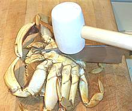

This popular crab is found from the Aleutian Islands of Alaska south to Santa Barbara, California and is the most economically important crab on the U.S. West Coast. The photo specimens are 6-3/4 inch across the carapace, a typical market size. The rear one was purchased pre-cooked and the front one live. The live one weighed 1.6 pounds and the cooked one 1.3 pounds. These crabs are also sold as "clusters", half a crab chassis with legs and claws attached and about 60% of the catch is rendered into canned and frozen crab meat.
These crabs can grow to 10 inches across the carapace but few get the chance because the fishery is very efficient with between 80% and 90% of legal crabs caught in any particular year. Legal crabs are sexually mature males greater than 6-1/4" across the carapace. By then they're about 4 years old and have had plenty of time to knock up enough females to keep the population going. Nearly all the California / Oregon / Washington catch is between 15 November and New Years Day, though the season goes on to mid July. There are other smaller catches throught the crab's full range which keep them available much of the year. These crabs are not endangered.
More on Crabs.
Dungeness crabs are reputed to have the sweetest meat of any crab, the flavor is more intensely "crabby" than others and they are definitely the most meaty. Yield from a 1.63 pound crab was 6.5 ounces of crab meat (25%), phenomenal for a crab. Unlike most crabs a large amount of the meat is in the body and the claws are a bit small.
Precooked Crabs: this is a large crab with a lot of gooky stuff inside. I find it does discolor some of the flesh and affects its flavor. To minimize these effects, before resteaming or otherwising using a precooked crab, I recommend following the same procedure as for fresh crabs to get them cleaned up.
Commercially crabs are just dumped into boiling water and cooked as-is for reasons of economy and presentation. I prefer to clean them first and with a little practice cleaning goes quickly.
| 1 | Sedate your crabs - they are not going to be at all cooperative otherwise and their claws can pinch pretty hard (they crush clams with them). Sedate them by giving them a good long soak in a tub of ice water (with plenty of ice). They'll still be moving but very sluggish and won't be able to pinch. Being sedated also makes the following step easier on the crab. The safest way to handle these crabs is by the shell from the top. You can grab them from behind as with other crabs but it's reported some are flexable enough to get at you there. | |
| 2 |  | With the crab on its back place a strong kitchen knife down the centerline and hit it with a soft faced mallet to drive it into the crab. This will kill the crab, not instantly but very quickly. If you want the shell intact for stuffing or some other use, make sure the point of the blade doesn't project over the front edge of the crab and don't pound too hard. The knife should go about half way through. You will finish the cut after removing the shell. |
| 3 |
| With the crab still upside down, bend back the apron and snap it off. The apron will be narrow on all crabs because you should never be preparing a female crab - they are not legal. |
| 4 | Holding the crab's rear legs down where they join the body, hook the thumb of your other hand under the shell where you just broke off the apron and pull it up. This will take a little strength. Pull the shell shell up and forward until it is completely free of the chassis. Much of the gooky stuff will go with the shell. | |
| 5 | Pull off the gills (known as "dead man's fingers") and pull off the mouth parts and other loose and removable parts. Finish cutting the chassis in half. | |
| 6 | Clean the two halves under running water removing anything that has color and using kitchen shears to cut off any extraneous pieces of shell. You should end up with a completely cleaned crab chassis in two halves with legs and claws attached to each half - all ready to cook by whatever means you please. |